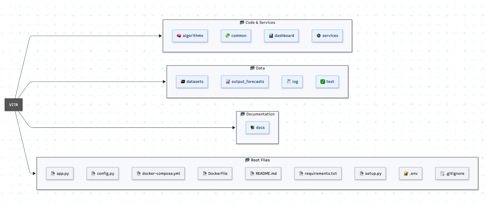

INTRODUCTION
The VITA Platform (Visionary Industrial Technology Architecture) was designed to enable the practical application of the 6C Architecture in industrial environments, offering a modular ecosystem for data analysis, forecasting, and process optimization. Developed in Python, VITA adopts a flexible and scalable design, communicating through REST APIs in JSON format, ensuring interoperability with external systems and seamless integration with industrial pipelines.
The project follows a folder structure that facilitates development, maintenance, and evolution:
algorithms – Contains forecasting and analytics algorithms, including LSTM, Reservoir Computing, hybrid models, and AutoML, each in its own folder for modularity and clarity.
common – Holds common modules and utility functions used across the application, such as path configuration, data handling, and logging.
dashboard – Implements VITA’s interactive interface, enabling visualization and analysis of forecasts and metrics.
datasets – Contains datasets used for model training, testing, and evaluation, including historical data and exogenous variables.
docs – Stores documentation generated with the Sphinx library (v4.0.1), describing the architecture, APIs, and processing flows.
log – Records execution logs, errors, and platform events for auditing and maintenance.
output_forecasts – Holds forecasts generated by the models, organized by customer, algorithm, and scenario.
services – Contains the implementation of services and API endpoints that orchestrate the platform’s functionalities.
test – Contains scripts and test data for module and service validation.
Files in the project root include:
app.py – Main application entry point.
config.py – General system configuration.
docker-compose.yml and Dockerfile – Container deployment configuration files.
requirements.txt – List of application dependencies.
setup.py – Installation and package configuration script.
This modular organization makes VITA a robust, scalable, and adaptable solution, addressing both research and development needs as well as real-world industrial deployments.
The general folder structure of the VITA Platform is shown below:
{kind=link}
